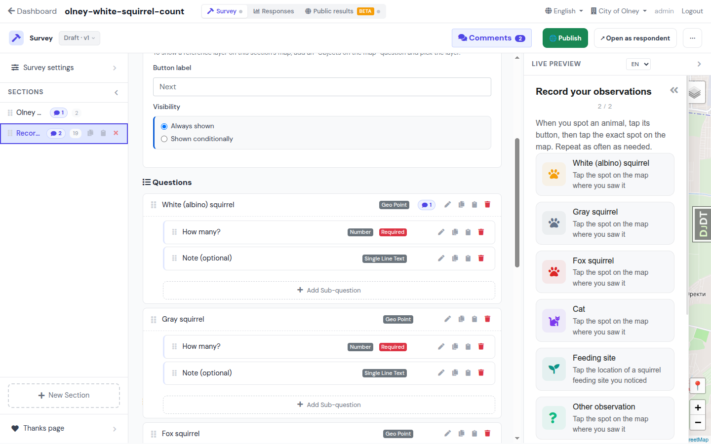
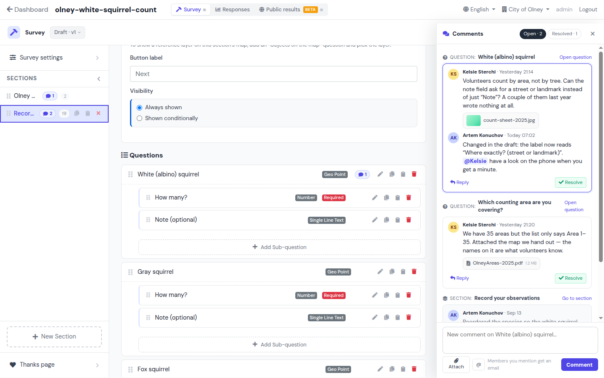
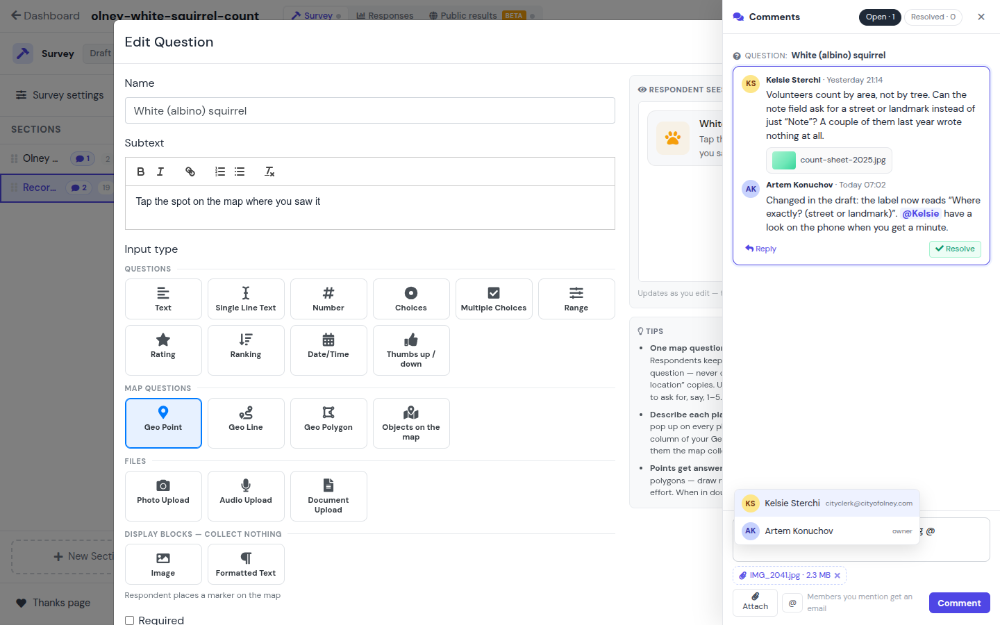
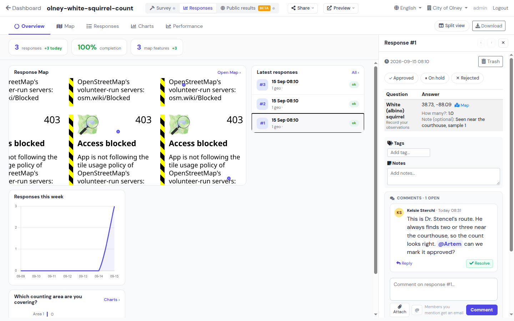
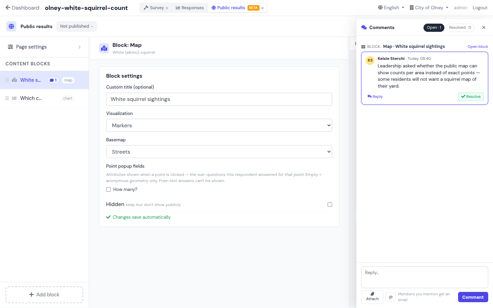
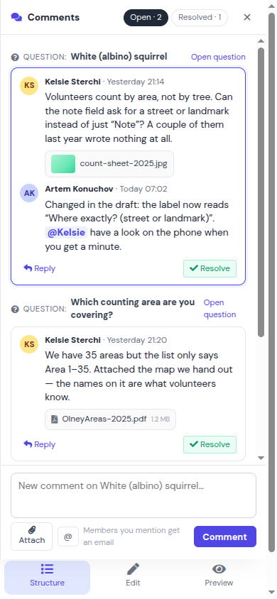
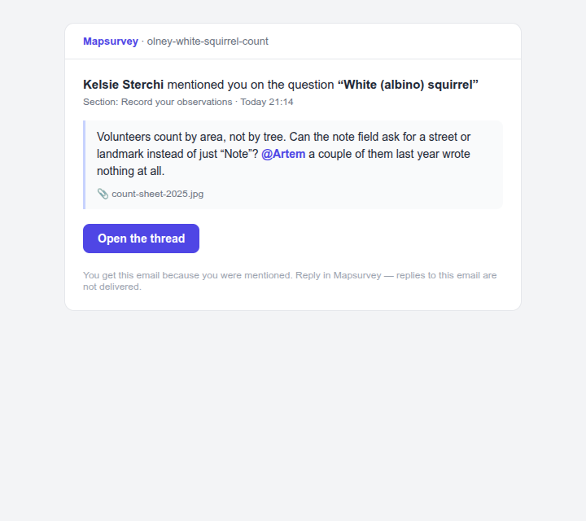

Comment threads on survey objects
Backlog #169, epic team-collaboration. Every frame is the real editor from the worktree dev server with the comment UI injected on top — the Olney survey, seeded responses, the actual chrome. Nothing is redrawn. One component (thread list + composer) lives in one slide-in drawer that opens on every page; only the anchor it is focused on changes.
Decided with the owner, 2026-09-15
- All four anchors in v1: question, section, respondent's response (= session), public-results block.
- One slide-in drawer from the right, everywhere — not a right-pane toggle, not a card inside the modal. Full width on phones.
- Every role (owner / editor / viewer) can open, reply and resolve. Own comment can be deleted by its author; any comment by an owner.
- Body = plain text with
@mentionsplus attachments (images and files). - Email goes to the participants of the thread: the author, anyone who replied, anyone @mentioned. Sent by a Celery task; invitations and activation mail move to the same task later.
Badges on rows, one Comments button in the toolbar, drawer from the right
Closed state (left): badges carry the open count; the toolbar gets a Comments · 2 button. Open state (right): the drawer slides over the live preview and lists every thread of the survey grouped by anchor. A click on a badge opens the drawer focused on that anchor.

Closed: badges + toolbar button. The preview stays where it is.

Open: drawer over the preview, 400px, closes with ×.
- Badges.
💬 2on a section = open threads inside it (own + its questions). On a question row it sits before the action icons, same slot as the visibility badge. Rows without a thread show a ghost icon on hover — that is the “add comment” affordance. - Grouped by anchor. Question / Section headings, each with an “Open question” / “Go to section” link. The focused thread has the indigo ring.
- Filters Open · N / Resolved · N. Resolved threads render muted with “Resolved by Kelsie” and a Reopen link.
- Composer pinned to the bottom, always targeting the focused anchor (the placeholder names it). Attach, @, and a hint that mentioned members get an email.
Same drawer, above the modal
“Edit question” gets a Comments · 1 open button in its header. It opens the same drawer, filtered to this question, on top of the modal. Here the composer has the @-mention popup open and a pending attachment.

- Why from the modal too. This is where the client reads the wording; a note about the label should be one click from the label.
- @ popup lists workspace members (name + email/role). Picking one inserts
@Kelsie, rendered as a chip. - Attachments: images get a thumbnail, other files an icon + size. A pending attachment shows under the textarea with a remove ×. Stored like layer-object assets (random keys), served through a gated view.
- Stacking. Drawer z-index above the Bootstrap modal; closing the drawer returns to the modal untouched.
Thread on a respondent's answer, inside the existing drawer
Anchor = the session (the whole response). Responses already has a right-hand drawer per response, so the thread is mounted inside it, under Tags & Notes, rather than opening a second drawer. The map popup and the Latest responses list get the same badge.

- Notes vs Comments. Notes stay: a private scratchpad, one text. Comments are a conversation with authors, mentions, email. Notes is not migrated.
- Triage use. “@Artem can we mark it approved?” — the status chips are right above, so the reply is an action, not a message.
- Map popup (tiles are blocked on dev, not shown): the identify popup gets a
💬 1row that opens this drawer scrolled to the thread.
Thread on a results block
Badge on the block row; the drawer opens from the toolbar button or the badge, focused on the block.

- Anchor label = block type + custom title (“Map · White squirrel sightings”); “Open block” selects it in the form.
- Toolbar button sits next to “Open as visitor”, same as on the Survey page.
Phone: the drawer takes the whole screen. Email: one message per mention/reply, deep link into the thread


- Mobile. Below 768px the drawer is full width above the bottom bar; × returns to whatever pane was open. Opened from a badge tap or the toolbar button (which moves into the “…” menu on narrow screens).
- Email subject:
Kelsie Sterchi mentioned you on “White (albino) squirrel” · olney-white-squirrel-count. Body = the comment, attachments by name, one button. The deep link opens the page with the drawer open and the thread focused (#thread-<id>). - Who gets it: participants of the thread (author, repliers, mentioned). A new thread with no mention emails nobody. Celery task; invitations and activation mail will ride the same task.
What a thread is
| Field | Value | Why |
|---|---|---|
survey | FK → canonical SurveyHeader | Publishing moves section/question rows to an archived header; the canonical id never changes. |
anchor_kind | question · section · session · results_block | One thread, one object. |
question_code / section_code | CharField | Codes survive versioning (SurveyMapLayer does the same). Duplicating a survey regenerates codes, so threads do not follow a duplicate — by design. |
session / results_block | nullable FK | Their ids are stable across publishes. |
status, resolved_by, resolved_at | open / resolved | Reopen keeps the history. |
| Comment | thread, author (SET_NULL), body text, mentions M2M, created_at | Plain text, escaped on render; @chips from the M2M, not re-parsed on every render. |
| CommentAttachment | comment, file, name, size, content_type | Same storage path as layer-object assets; served through a gated view. |
Still open
- Section badge count. Own threads only, or own + questions inside (shown)? The rolled-up number is what says “something is waiting in this section”.
- Composer target when nothing is focused: default to the current section, or ask to pick an anchor first?
- Sessions of archived versions still appear on Responses; their threads keep working since the FK is on the session. Confirm that is fine.